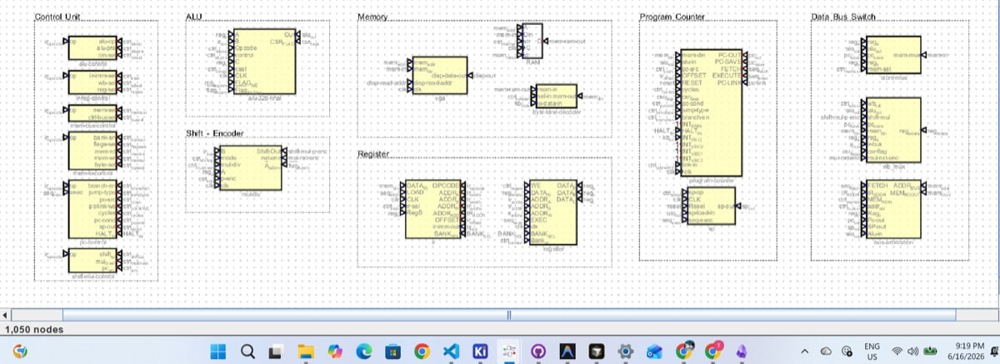

Control
The ROM was always going to be a wiring problem
One 64-bit control word is simple in Digital. On a breadboard it is twenty-something wires crawling across the whole CPU — to the wrong places.
Every instruction looks up a control word: what the ALU should do, whether to write a register, read memory, jump the PC, enable multiply. In simulation that is one chip and one splitter. On a breadboard the signals do not even go where you would expect. Shift mode comes out of ALU decode and plugs into mul-div. Flag-write lives with memory controls and feeds the ALU. PC jump fields split across two ROM bytes. Fine on paper. Miserable to route.
Before
One microcode.dig on main. One EEPROM, one 64-bit splitter, every control line tunneling from the same place. One ROM file, one address bus from the IR, dead simple in Digital. Fanout hell: to test mul-div you need the entire decode tree. Touch the bit layout and you redo a 64-wide splitter.
Current
Split decode into small boards. Each sits next to the hardware it drives. They all listen to the same opcode from the IR — that is the shared backplane. Each board has its own small EEPROM and a local splitter.
- ALU control — opcode, operand prep, carry select. Lives on the ALU board.
- Shift / mul-div control — shift mode, multiply enable, priority-encoder mux.
- IR / register / writeback — immediate encoding, writeback source, register write.
- Memory I/O — bank, read/write, byte lane. Flag-write comes out here too.
- Memory bus — what is on the address bus, how store data is picked.
- PC / stack — branches, jumps, link, conditions. Two small ROMs; the fields would not pack.
HALT stays on main. Opcode plus execute phase. One comparator. Not worth its own board.

Fig. — Control unit on mainDecode sits with the datapath it drives
Short ribbons. Bring-up in pieces: the ALU board with just ALU control, before the rest exists. The master catalog stays the source of truth; a script cuts per-board images. The cost is eight EEPROMs instead of one, and opcode fanout to all of them.